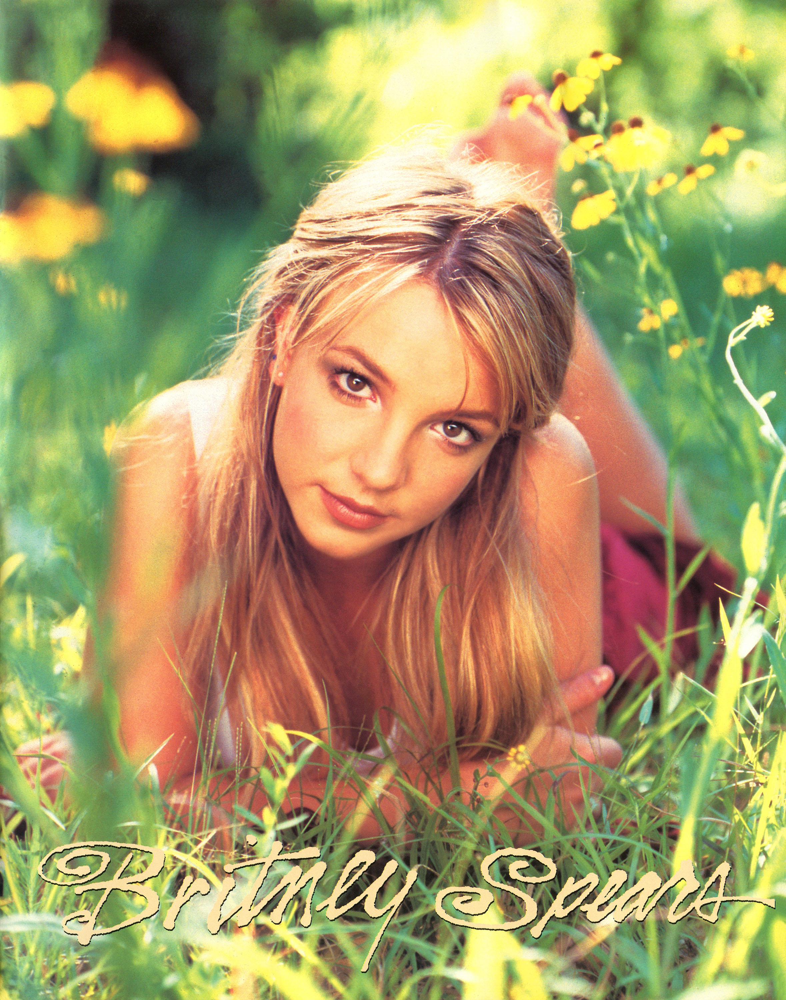
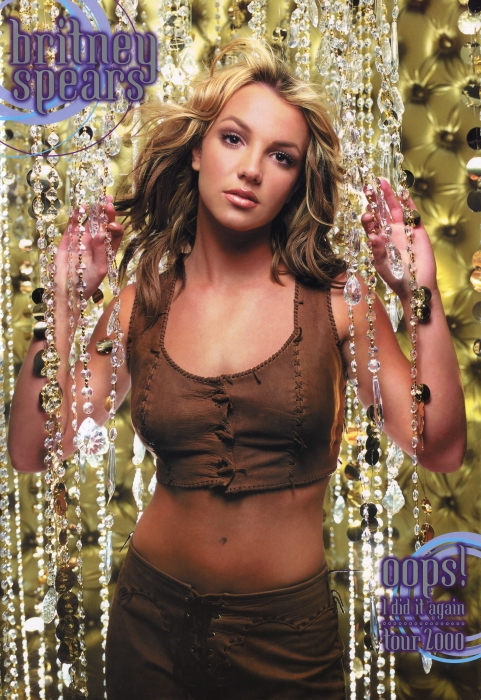
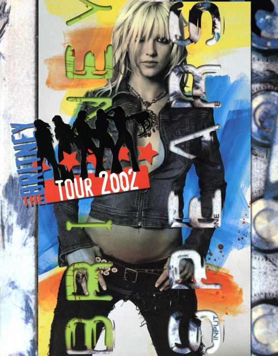
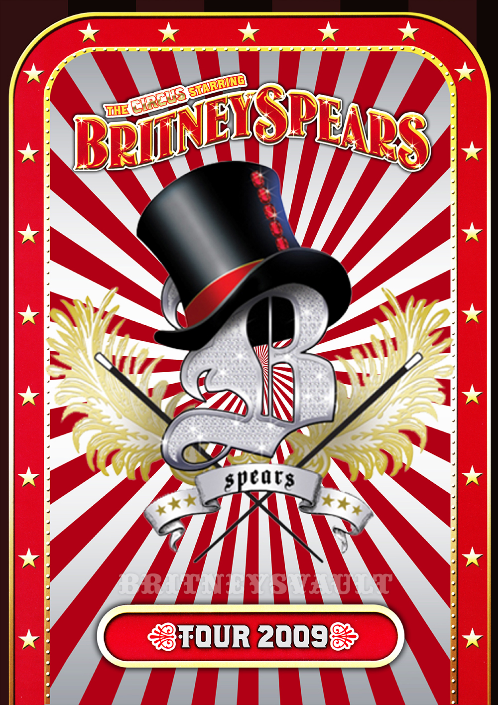
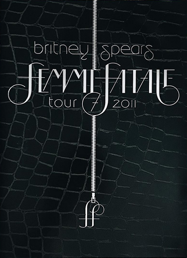

...Baby One More Time Tour fue la primera gira musical de la cantante estadounidense Britney Spears en apoyo de su primer álbum de estudio ...Baby One More Time (1999) y visitó Estados Unidos y Canadá. La gira se anunció en marzo de 1999, con fechas publicadas un mes después. Tommy Hilfiger fue elegido como el patrocinador de la gira. El espectáculo se dividió en varios segmentos, y cada segmento fue seguido por un interludio al siguiente segmento, y terminó con un encore. El setlist consistió en canciones de su álbum debut y varias versiones. La gira recibió comentarios positivos de los críticos; muchos destacaron la personalidad de Spears y su look vanguardista.
El escenario era una escalera, una pantalla gigante principal y dos plataformas donde la banda de Spears se organizó. Spears interpretó ocho canciones de su álbum debut y algunos covers de otros artistas, como «Vogue» y «Material Girl» de Madonna, también «Black Cat» y «Nasty» de Janet Jackson y «Open Arms» de la banda de rock Journey. Por otro lado, Steps, C-Note, Boyz N Girlz United, P.Y.T. y Joey McIntyre se encuentran entre los teloneros. La gira comenzó el 28 de junio de 1999 y finalizó el 15 de septiembre del mismo año. En general, el tour fue un gran éxito para Spears.
Tommy Jeans (Tommy Hilfiger) fue el patrocinador oficial de la gira en Estados Unidos y Canadá. "Este año hemos puesto música en la vanguardia de todo lo que hacemos", dijo Hilfiger. "Britney representa el espíritu de Tommy Jeans y de la juventud de hoy. No puedo pensar en una mejor forma de continuar este apasionante año por uno de los patrocinadores de hoy más calientes jóvenes artistas."
Spears realizó una abreviada muestra en Bethel, Nueva York para el Woodstock Music and Art Festival.

Oops!... I Did It Again Tour fue la segunda gira musical de la cantante estadounidense Britney Spears, realizada para promover su segundo álbum de estudio, Oops!... I Did It Again (2000) y visitó Norteamérica, Europa y Brasil. Fue la primera vez que Spears realizó una gira fuera de Norteamérica. Fue anunciada en febrero de 2000, mientras que Spears se encontraba en medio de la gira Crazy 2K Tour. El escenario era mucho más elaborado que sus giras anteriores y presentaba pantallas de video, pirotecnia y plataformas móviles. El setlist estaba compuesto por canciones de sus dos primeros álbumes de estudio, ...Baby One More Time y Oops!... I Did It Again, así como algunas versiones. Showco fue la compañía de sonido, que utilizó el sistema PRISM para adaptar el espectáculo a cada lugar. Spears usó un micrófono de mano y un auricular durante los espectáculos, mientras que un ADAT se usó para reemplazar su voz durante las rutinas energéticas de baile.
El espectáculo consistió en cuatro segmentos, cada segmento seguido de un interludio al siguiente segmento, y terminó con un encore. El espectáculo comenzó con Spears descendiendo de un orbe gigante. La mayoría de las canciones mostraban rutinas de baile enérgicas con la excepción del segundo segmento, que presentaba principalmente baladas. El encore consistió en una actuación con pirotecnia. Oops!... I Did It Again Tour recibió opiniones positivas de los críticos, quienes elogiaron la energía de Spears en el escenario así como la banda. También fue un éxito comercial, las fechas reportadas por Billboard promediaron $507,786 en recaudación y casi 15,841 en asistencia, con un total de $43.6 millones y más de 1.4 millones de boletos y se convirtió en una de las giras más recaudadoras de 2000. Oops!... I Did It Again Tour fue transmitido por muchos canales de todo el mundo.

Dream Within a Dream Tour fue la cuarta gira musical de la cantante estadounidense Britney Spears, realizada para promover su tercer álbum de estudio, Britney (2001). Fue promocionada por Concerts West, siendo la primera vez que Spears no hizo una gira con Clear Channel Entertainment. Comenzó en Columbus, Ohio, el 1 de noviembre de 2001, cinco días antes del lanzamiento del álbum, y finalizó el 28 de julio de 2002, en un polémico concierto en la Ciudad de México. De acuerdo a Billboard el Dream Within a Dream Tour generó ganancias mayores a los US$43,7 millones, siendo así la gira más recaudadora de una artista femenina en el 2002.1
El espectáculo fue más elaborado y teatral que sus anteriores giras. Se incluyó una forma clave del escenario que permitía una fácil vista de todo el público, diversas plataformas entre ellos un círculo en torno a Spears parte de la audiencia y una enorme pantalla de la lluvia que vertía más de 360 galones de agua, también se utilizaba confeti, pirotecnia, luces láser y niebla artificial. Para los conciertos del 2002 se hicieron algunos cambios, varias canciones fueron remezcladas y Spears interpretó algunas canciones inéditas. Irónicamente, su último espectáculo en la Ciudad de México se canceló a la mitad debido a fuertes lluvias y tormentas eléctricas. El espectáculo del 18 de noviembre de 2001 en Las Vegas fue grabado para un especial que salió al aire en HBO y después se publicó en un DVD titulado Live from Las Vegas. El show de diciembre en Albany también fue grabado y reproducido en un programa de televisión alemán y en abril de 2002 también fue grabado el espectáculo en Japón para ser rodado en ese país. Cabe señalar que el especial de HBO ganó un premio Emmy en 2002.

The Onyx Hotel Tour fue la quinta gira musical de la cantante estadounidense Britney Spears, realizada para promocionar su cuarto álbum de estudio, In the Zone (2003) y visitó América del Norte y Europa. En diciembre de 2003 se anunció una gira para promocionar el álbum. Su nombre original era In the Zone Tour, pero Spears fue demandada por infracción de marca registrada y se le prohibió usar el nombre. Debido a ello, Spears se sintió inspirada para crear un espectáculo con un tema de trasfondo para la gira, un hotel, que luego mezcló con el concepto de una piedra de ónix. El escenario, inspirado en los musicales de Broadway, fue menos elaborado que sus giras anteriores. El repertorio estuvo compuesto principalmente por canciones de In the Zone, así como algunas de sus canciones anteriores pero reelaboradas con diferentes elementos de jazz, blues y percusión latina. La promotora de la gira, Clear Channel Entertainment, promocionó la gira a una audiencia más adulta que sus giras anteriores, mientras que MTV, quien patrocinó la gira, hizo promoción a través de su canal de televisión y sitios por internet.
La gira se dividió en siete segmentos: Check-In, Mystic Lounge, Mystic Garden, The Onyx Zone, Security Cameras, Club y el encore. El check-in muestra actuaciones con baile y avanza hacia el tema principal, el hotel. Mystic Lounge presenta un homenaje al Cabaret y otros musicales. Mystic Garden exhibió un escenario inspirado en la jungla. The Onyx Zone muestra a Spears interpretando una balada con la compañía de unos acróbatas. Security Cameras fue la parte más atrevida del espectáculo, con Spears y sus bailarines emulando diferentes prácticas sexuales. Club mostró una actuación con influencias urbanas. El encore consistió en un interludio del mal funcionamiento del sistema y Spears actuó con un conjunto rojo. La gira recibió opiniones generalmente favorables de los críticos, quienes la elogiaron por ser entretenida, mientras que la criticaron por parecer "más [como] un espectáculo que un concierto real".
The Onyx Hotel Tour fue un éxito comercial.12 De acuerdo con la revista Billboard, los 25 espectáculos en Norteamérica recaudaron casi $19 millones con 300,460 boletos y $34 millones con 601,040 boletos vendidos en 52 de 53 espectáculos en todo el mundo. Según Pollstar, The Onyx Hotel Tour vendió 641,428 boletos en 2004.3 El 6 de junio de 2004, Spears actuó para 25,367 fanáticos en el RDS Arena en Dublín con ganancias de $1,359,648 brutos. Las cuatro noches en el Wembley Arena de Londres recaudaron $2,179,820 con 41,823 boletos vendidos.4 En marzo, Spears sufrió una lesión en la rodilla en el escenario que la obligó a reprogramar dos shows. En junio, Spears se cayó y se lastimó la rodilla nuevamente durante la filmación del video musical del sencillo «Outrageous». Se sometió a una cirugía artroscópica y el resto de la gira fue cancelada. En 2005, Spears demandó a sus compañías de seguros por negarle un reembolso por la cancelación del resto del espectáculo. Showtime transmitió en vivo el show del 28 de marzo de 2004 en el American Airlines Arena, en un especial titulado Britney Spears: Live from Miami. Se incluyeron imágenes tras bastidores en el reality show Britney & Kevin: Chaotic.

The Circus Starring: Britney Spears —en español: El Circo Presenta: Britney Spears— fue la sexta gira internacional de la cantante estadounidense Britney Spears, quien la realizó para promocionar su sexto álbum de estudio Circus (2008) y Blackout (2007). AEG Live produjo la gira, la que representó la primera de carácter internacional que la cantante realizó después de cinco años.2 Contó con cuatro etapas que se realizaron entre marzo y noviembre de 2009. En aquel periodo recorrió los Estados Unidos —donde las entradas se vendieron en su totalidad—, Canadá, el Reino Unido, Irlanda, Francia, Bélgica, Dinamarca, Suecia, Finlandia, Alemania, Rusia y Australia, país donde rompió récords en ventas.
La gira contó con un escenario de tres plataformas circulares que permitían una visión en 360º y con un muy coreografiado espectáculo centrado en el mundo circense. Incluyó acróbatas, magos, payasos y numerosos bailarines que acompañaron a Spears como el centro de atención. Editores como M. Tye Comer de Billboard lo catalogaron como un espectáculo «totalmente deslumbrante». Según Pollstar, la gira recaudó [$]131,8 millones con 97 espectáculos.1 Con ello se convirtió en la quinta gira más recaudadora de 2009, en una de las giras más recaudadoras de la primera década de 2000 y en la séptima gira de una artista femenina más recaudadora en la historia.3

Femme Fatale Tour fue la séptima gira internacional de la cantante estadounidense Britney Spears,2 destinada a promover a su séptimo álbum de estudio, Femme Fatale (2011). Producida por Live Nation y dirigida por Jamie King,34 la gira contó con cuatro etapas que se realizaron durante los últimos siete meses del año 2011 en América Anglosajona, Europa, los Emiratos Árabes Unidos y América Latina.56 Con su inicio ésta representó a la primera gira de la cantante, después de un poco más de un año y medio desde The Circus Starring: Britney Spears, la quinta gira más recaudadora del año 2009, con $131,8 millones.7 En noviembre fue publicado su DVD y BD Britney Spears Live: The Femme Fatale Tour.
Tras su noche de apertura, los críticos le dieron una buena recepción. Barry Walters de Rolling Stone la catalogó como la gira «posiblemente más llamativa y entretenida que ha hecho Britney Spears en su carrera», además 7 canciones del concierto eran cantadas en totalmente en vivo.8 Asimismo, el público agotó sus primeras entradas y le llevó a recaudar US$68,7 millones, con sus ochenta espectáculos, siendo la undécima gira más exitosa del año.1910 A su vez, los lectores de Billboard la catalogaron como la mejor del año.11

Britney: Piece of Me fue la primera residencia de conciertos de la cantante estadounidense Britney Spears, desarrollada en el casino Planet Hollywood Resort & Casino, en Las Vegas.1 Dirigida por Baz Halpin,2 la serie de conciertos tuvo una duración inicial de dos años comprendiendo cincuenta espectáculos anuales para ser alargada a un total de 4 años con más de 100 espectáculos en total, con un inicio el 27 de diciembre de 2013.3 Esta marcó el regreso de la cantante a los escenarios, después de su gira internacional Femme Fatale Tour de 2011. La residencia debía finalizar en diciembre de 2015, dando lugar a Jennifer Lopez como la nueva artista de Planet Hollywood con su nuevo espectáculo All I Have, pero durante su presentación del 9 de septiembre de 2015, Spears confirmó que estaría extendiendo su residencia por un período adicional de dos años, finalizando así en 2017. Además, debido a la nueva extensión, la cantante decidió renovarlo y con lo cual se dio lugar a una nueva versión del espectáculo a partir del concierto del 13 de febrero de 2016.
La residencia se desarrolla en un teatro absolutamente reconstruido por el casino y complejo turístico, el que según TMZ.com firmó un contrato por 12 millones de dólares a la cantante por la serie de conciertos, paga que refiere a más de 450.000 dólares por presentación. en los primero dos años tendría unas ganancias de 30 millones de dólares4 Dicho teatro tiene una capacidad para 4600 personas, es similar a un planetario, cuenta con asientos tradicionales, una pista de baile, mesas privadas y servicio de bebestibles. En marzo de 2015 el espectáculo de Spears fue galardonado por la revista Las Vegas Review-Journal como el Mejor espectáculo de Las Vegas.5 El espectáculo recaudó casi $ 138 millones de 0,9 millones de boletos a un precio promedio de $ 150.
El 28 de marzo de 2017, Spears confirmó que el espectáculo debutará internacionalmente durante el verano de 2017 al anunciar espectáculos en Asia, bajo el nombre de Britney: Live In Concert.6 Asimismo, en enero de 2018 fueron anuncidas fechas para Norte América y Europa durante el verano de ese mismo año, prolongando la gira.